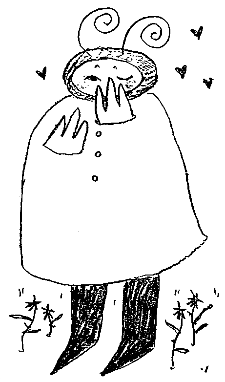
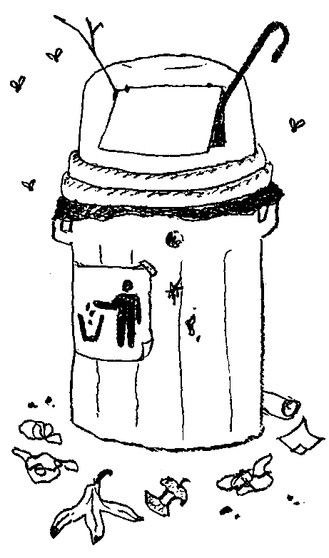

How to Hide Your Feelings from a Girl You Like
Maybe she’s dating your best friend. Maybe you’ve already dated, broken up with her, but still have feelings. Whatever your reasons, there are times you might want to hide your romantic feelings from the girl you’re attracted to.
Taking care to conceal your feelings both in and out of her presence will help keep a lid on the truth.
If the girl you like confronts you directly, hiding your feelings from her can seem impossible. Stay cool and react in a realistic way. Acting startled or surprised might give away the fact that you’re hiding something.
Do not reply in a nervous manner.
There are many forms direct questions can take, but if she asks
“Do you have a crush on me?” or “Do you have feelings for me?”
you might respond,
“No, why do you ask?” or “Certainly not, whatever gave you that idea?”
If you don’t feel comfortable lying, rely in an ambiguous way. For instance, using the above example, you might simply reply “What makes you think that?” or “Why do you ask?” without including the explicit denial.
She might be asking you about your feelings because she has feelings for you too.
Stay aware of your own unconscious invitations for affection. There are certain unconscious cues indicating attraction conveyed by body language.
For example, frequent, seemingly unnecessary grooming (touching your hair or smoothing your clothes), facing your body towards her, and thrusting your chest out and your shoulders back, all provide indications that you’re attracted to someone in your presence
and yearning for them to notice and touch you.
Most of these can be stopped once you are aware of and looking for them in your own behavior.
Keep in mind that these cues are effectively invisible unless someone is consciously looking for them. You have no need to worry that you're sending out "messages" of attraction.
Show affection to another girl. If the girl you like believes you have a girlfriend already, or are interested in someone else, she’ll be unaware that you have feelings for her. By showing or expressing affection for another girl, you’ll effectively hide your feelings for her. Mention to a friend in an offhand way that you think another girl is cute when you’re within earshot of the girl you have feelings for. This will lead her into thinking you’re not interested in her.
This third party could have their feelings hurt.
Watch what you say. Stay quiet around the girl you have a crush on. If you do talk, make sure your words are thoughtful and carefully considered. Talking too much, or too nervously, will tip her off that something in your attitude is amiss.
If the conversation veers toward romantic topics, or topics which might induce awkward feelings for you, try to steer it back toward subjects which aren’t so close to home.
Communicate as you always do with friends and acquaintances.
Utilize distractions to keep her attention from you.
Distractions can be either a solitary activity
(like a TV show)
or a shared activity
(for instance, a puzzle you work on together).
In either case, your distraction should be something which doesn’t necessitate conversation.
Distract yourself if you’re unable to distract her. When she’s around, busy yourself with a videogame, a book, or your phone/tablet. Find an activity you can do alone, even if she is nearby. Whatever you do, ensure it precludes the possibility that you will express your feelings to/about her.
Limit the time spent with her.
When you’re with her, it is more difficult to avoid situations in which you feel the emotional pressure to confess how you feel about her.
If you must spend time with her, do it in a big group or at a party. In group situations, you can easily avoid her and spend time talking to someone else, or wander off so that you’re not near her.
Act disinterested. When the girl you’re interested in is around, maintain a pleasant but detached disposition.
Don’t ignore her or pretend you’re too busy to be bothered with her; that will upset her and hurt her feelings.
Rather, show mild interest in what she has to say, but no more than you would with any other friend or acquaintance. Do not become withdrawn or uncharacteristically quiet when you’re around the girl you like. Such behavior is a telltale sign that something in your emotions is amiss.
if she’s around, and look away at the ground or at a fixed point in the opposite direction from where she is located in order to best hide the way you feel.
Don’t talk to anyone about your feelings.
At some point, this knowledge will reach the very ears it was never meant to—
Keep a diary. Write down all the thoughts and ideas you have about the girl you like in the diary. Write down the things you’d like to say to her but aren’t ready to yet.
